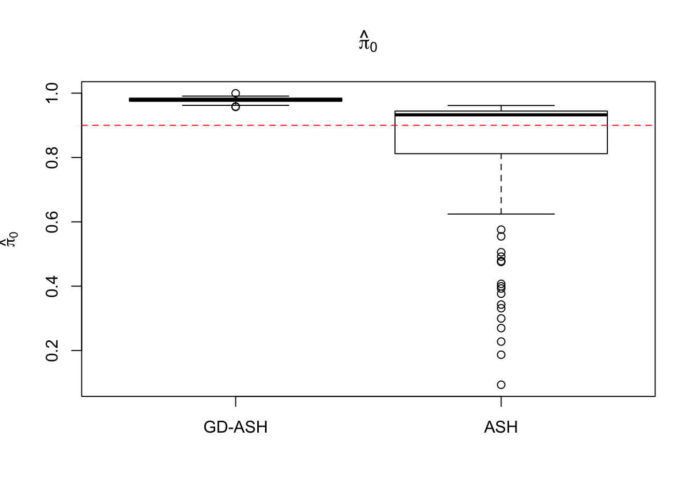
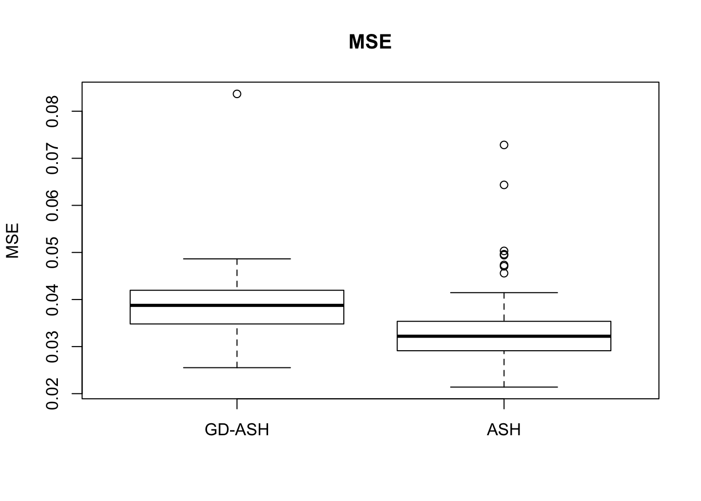
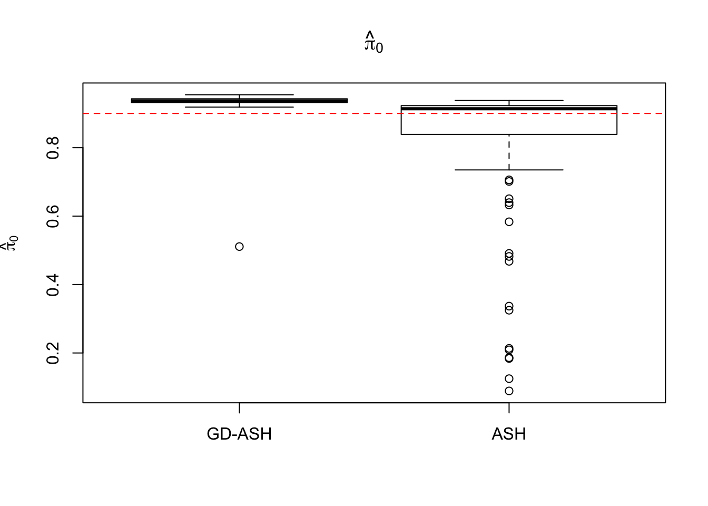
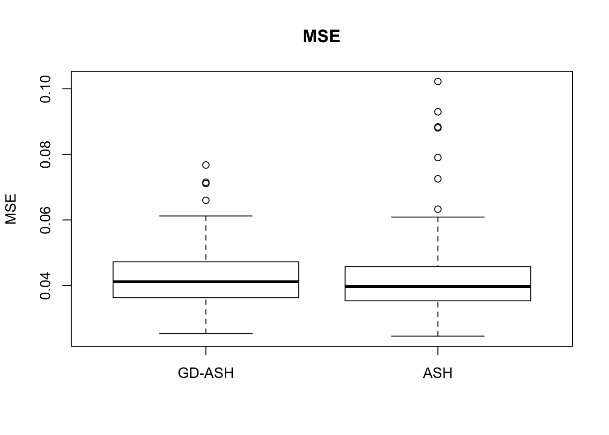
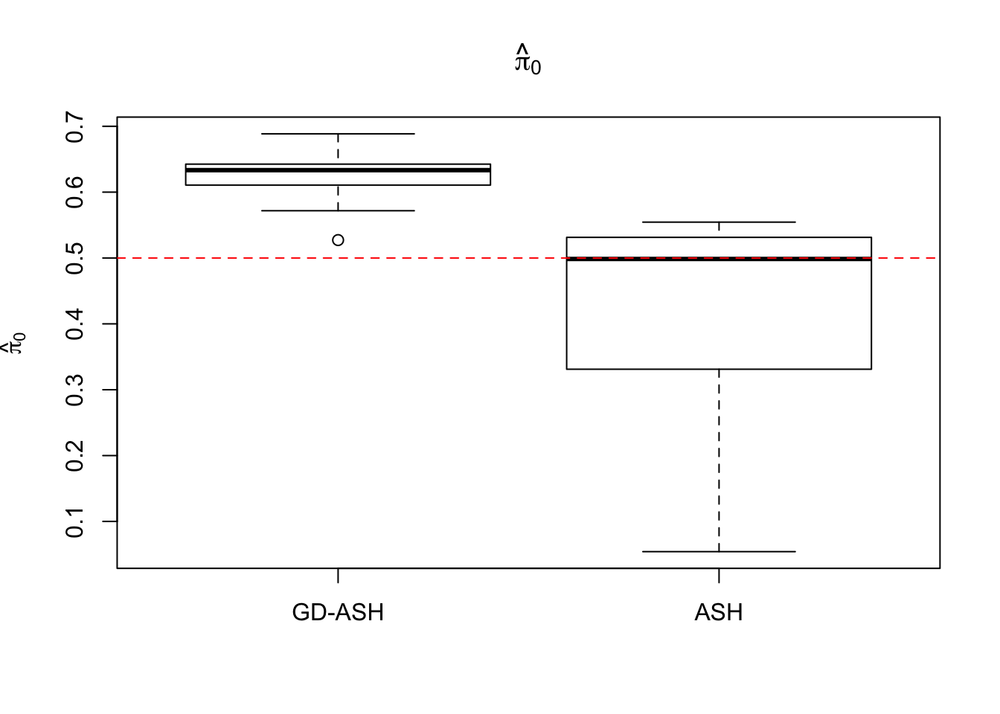
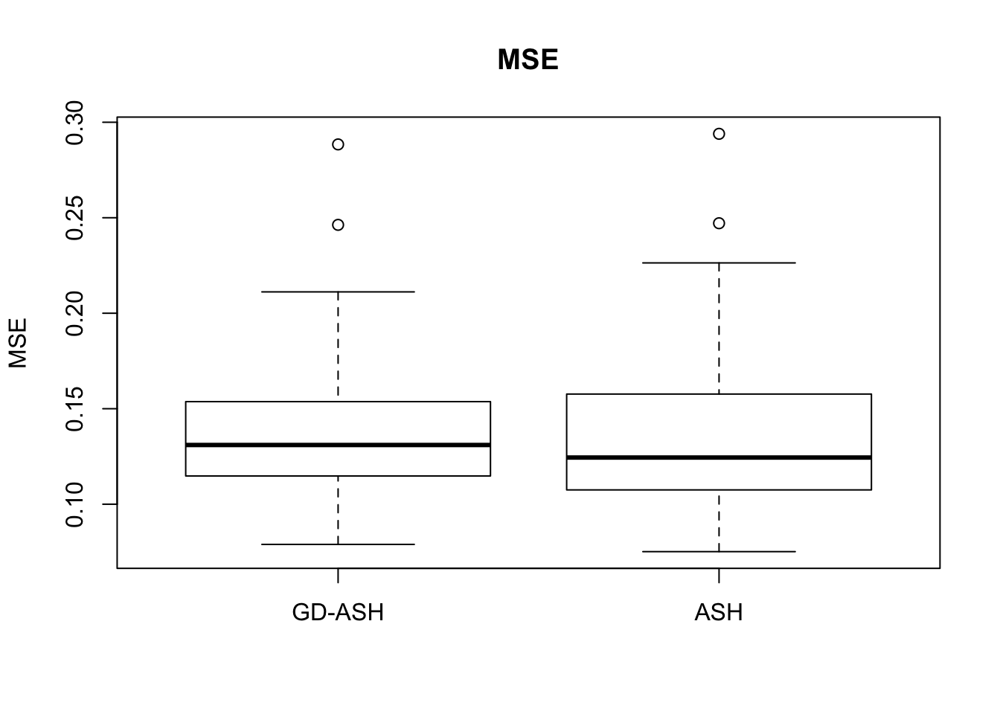
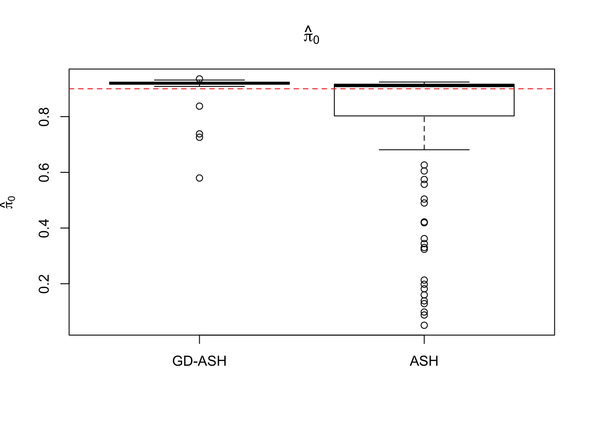
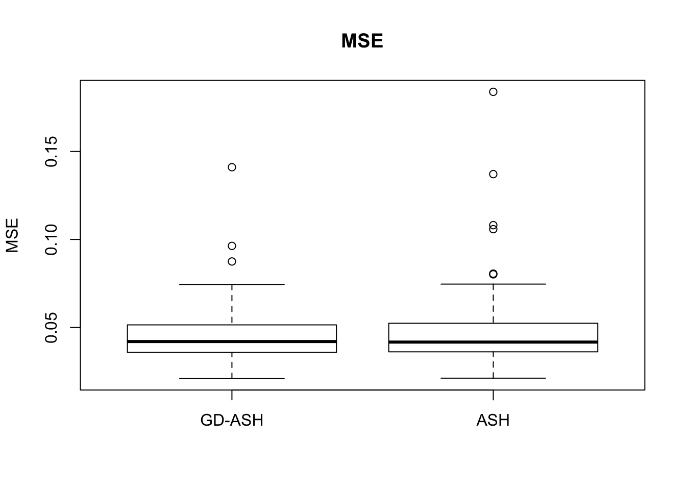

Last updated: 2017-05-20
Code version: 700fba8
library(ashr)
library(edgeR)
library(limma)
library(qvalue)
library(seqgendiff)
library(sva)
library(cate)source("../code/gdash.R")Using David’s package seqgendiff, we are adding artefactual signals to the real GTEx Liver RNA-seq data.
mat = read.csv("../data/liver.csv")The true signal comes from a mixture distribution
\[
g\left(\beta\right) = \pi_0\delta_0 + \left(1 - \pi_0\right)N\left(0, \sigma^2\right)
\] The simulated data matrices are then fed into edgeR, limma pipeline. In the following simulations, we always use \(5\) vs \(5\).
N = 100
nsamp = 10
pi0 = 0.9
sd = 1
system.time(ashvgdash <- N_simulations(N, mat, nsamp, pi0, sd)) user system elapsed
6854.603 627.845 12855.081 
N = 100
nsamp = 10
pi0 = 0.9
sd = 2
system.time(ashvgdash <- N_simulations(N, mat, nsamp, pi0, sd)) user system elapsed
5877.223 621.433 5256.693 
N = 100
nsamp = 10
pi0 = 0.5
sd = 2
system.time(ashvgdash <- N_simulations(N, mat, nsamp, pi0, sd)) user system elapsed
5269.488 574.588 15042.479 
N = 100
nsamp = 10
pi0 = 0.9
sd = 3
system.time(ashvgdash <- N_simulations(N, mat, nsamp, pi0, sd)) user system elapsed
5321.625 558.205 15356.345 
sessionInfo()R version 3.3.3 (2017-03-06)
Platform: x86_64-apple-darwin13.4.0 (64-bit)
Running under: macOS Sierra 10.12.4
locale:
[1] en_US.UTF-8/en_US.UTF-8/en_US.UTF-8/C/en_US.UTF-8/en_US.UTF-8
attached base packages:
[1] stats graphics grDevices utils datasets methods base
other attached packages:
[1] Rmosek_7.1.3 PolynomF_0.94 cvxr_0.0.0.9009
[4] REBayes_0.62 Matrix_1.2-8 SQUAREM_2016.10-1
[7] EQL_1.0-0 ttutils_1.0-1 cate_1.0.4
[10] sva_3.20.0 genefilter_1.54.2 mgcv_1.8-17
[13] nlme_3.1-131 seqgendiff_0.1.0 qvalue_2.4.2
[16] edgeR_3.14.0 limma_3.28.5 ashr_2.1-13
loaded via a namespace (and not attached):
[1] reshape2_1.4.2 splines_3.3.3 lattice_0.20-34
[4] colorspace_1.2-6 htmltools_0.3.6 stats4_3.3.3
[7] yaml_2.1.14 XML_3.98-1.4 survival_2.40-1
[10] rlang_0.1 DBI_0.6-1 BiocGenerics_0.18.0
[13] foreach_1.4.3 plyr_1.8.4 stringr_1.2.0
[16] leapp_1.2 munsell_0.4.3 gtable_0.2.0
[19] svd_0.4 codetools_0.2-15 evaluate_0.10
[22] Biobase_2.32.0 knitr_1.15.1 IRanges_2.6.0
[25] doParallel_1.0.10 pscl_1.4.9 parallel_3.3.3
[28] AnnotationDbi_1.34.3 esaBcv_1.2.1 Rcpp_0.12.10
[31] xtable_1.8-2 corpcor_1.6.8 scales_0.4.1
[34] backports_1.0.5 S4Vectors_0.10.1 annotate_1.50.0
[37] truncnorm_1.0-7 ggplot2_2.2.1 digest_0.6.12
[40] stringi_1.1.2 grid_3.3.3 rprojroot_1.2
[43] tools_3.3.3 magrittr_1.5 lazyeval_0.2.0
[46] tibble_1.3.1 RSQLite_1.0.0 MASS_7.3-45
[49] ruv_0.9.6 rmarkdown_1.5 iterators_1.0.8
[52] git2r_0.18.0 This R Markdown site was created with workflowr